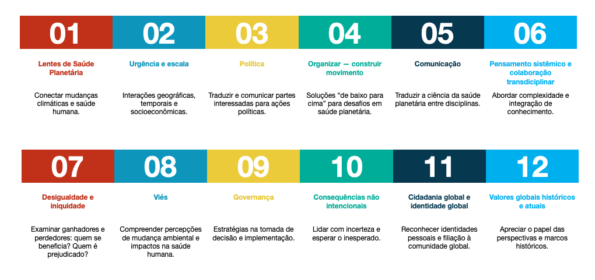
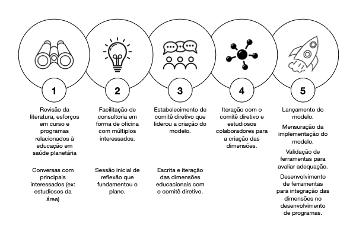

Introdução
Não há dúvida de que o ataque contínuo aos sistemas naturais da Terra ameaça a saúde das gerações atuais e futuras. Em um cenário como o habitual, as mudanças climáticas, a má qualidade do ar, a degradação do solo, os ciclos biogeoquímicos alterados e a superexploração da biodiversidade marinha e terrestre ameaçam desmoronar a civilização como a conhecemos. Comunidades em desvantagem social e econômica mundo afora enfrentam um risco ainda maior dessas consequências negativas. A sindemia de COVID-19 (HORTON, 2020), a intensificação das temporadas de furacões e tufões, a expansão dos incêndios na Austrália, no oeste americano, no Pantanal e na Sibéria (IPCC, 2007) além do pior surto de gafanhotos em 70 anos na África Oriental (PENG et al., 2020), são uma amostra dos impactos que a humanidade pode se deparar cada vez mais nas próximas décadas. Esses e outros eventos globais tornar-se-ão mais frequentes se as tendências ambientais, demográficas e de hiperconsumo permanecerem como as atuais.
No entanto, há razão para esperança. Em meio a essa turbulência, também temos a oportunidade de transformar os sistemas e valores que sustentam a vida no planeta [Terra]1. O senso de urgência frente às crises convergentes tem trazido uma atenção sem precedentes para a interconexão entre as sociedades humanas e a biosfera, a necessidade de solidariedade global, coordenação em larga escala para soluções baseadas na ciência e de ação coletiva.
Em meio a essas realidades entrelaçadas e urgentes dos desafios ambientais e de saúde, as instituições educacionais estão posicionadas de forma única para contribuir com o alcance das transformações necessárias para um futuro mais saudável, ao incorporar a Educação em Saúde Planetária em seus currículos. A Educação em Saúde Planetária, em todos os níveis e disciplinas, irá equipar e capacitar estudantes com o conhecimento, as habilidades, os valores e as atitudes necessários para conduzir ações transdisciplinares e de reforço mútuo que protejam e restaurem a Saúde Planetária, alcançando os Objetivos de Desenvolvimento Sustentável [ODS] (UNITED NATIONS, 2015) da Organização das Nações Unidas (ONU). Conforme estipulado no relatório de Aceleração da Educação para os ODS nas Universidades (SDSN, 2020), nunca foi tão urgente “expandir enormemente a capacidade da sociedade para resolver desafios complexos”. Embora reconheçamos que a Educação em Saúde Planetária é essencial para todas as idades e todos os cidadãos globais, este modelo [educacional] específico é designado para estudantes que estejam ingressando no ensino superior (ou seja, no ensino geral de graduação em universidades e faculdades). Este nível [educacional] seria equivalente ao nível 6 da estrutura de Classificação Internacional Normalizada de Educação, versão de 2011.
Como resultado de curto prazo, este modelo visa a orientar a educação de cidadãos globais (HOVLAND, 2014), de atuantes e profissionais aptos e dispostos a enfrentar os desafios complexos de Saúde Planetária do nosso mundo atual. Como resultado de longo alcance, este modelo pode inspirar todas as pessoas ao redor do mundo a criar, restaurar, administrar e conservar ecossistemas saudáveis para uma civilização humana próspera. Prevemos que este modelo contribuirá para resultados positivos para a biosfera e para a superação dos desafios de Saúde Planetária que temos diante de nós.
Embora caracterizemos a Saúde Planetária como uma área distinta de prática, este modelo [educacional] reconhece e se edifica em movimentos científicos anteriores e áreas como a medicina da conservação, eco-saúde, geo-saúde e saúde única [one health]. Esse modelo também reconhece as inestimáveis contribuições dos sistemas de conhecimentos indígenas tradicionais e contemporâneos, especialmente aqueles que há muito compreenderam a interconexão entre humanos e Natureza.
O Processo de Criação do Modelo
A criação do Modelo para Educação em Saúde Planetária foi comissionada pela Aliança para Saúde Planetária [Planetary Health Alliance — PHA] (PHA, 2015). Sediada na Escola de Saúde Pública T. H. Chan da Universidade Harvard, a Aliança é uma rede transdisciplinar de milhares de pessoas e mais de 350 organizações de mais de 60 países que trabalha para compreender e lidar com os impactos da mudança ambiental global na saúde humana. A missão da Aliança é promover, mobilizar e liderar uma área inclusiva e transdisciplinar de Saúde Planetária e suas diversas ciências, histórias, soluções e comunidades. Para esta finalidade, a Aliança está focada na facilitação e curadoria de pesquisas em Saúde Planetária, educação, construção e expansão de comunidades, e ações para alcançar a Grande Transição, uma mudança abrangente na maneira como os seres humanos interagem entre si e com a Natureza.
A comunidade da Aliança identificou anteriormente uma lacuna nos modelos acessíveis que orientavam a Educação em Saúde Planetária. Assim, em julho de 2019, iniciou a criação do primeiro Modelo para Educação em Saúde Planetária. Como parte desse processo, a Aliança convocou uma força tarefa interdisciplinar, intergeracional, geograficamente diversa e inclusiva no que tange ao gênero, identificando líderes de pensamento proeminentes na[s] área[s] de Saúde Planetária e/ou da educação. A Aliança os convidou para estarem envolvidos em um processo de 16 meses, de dezembro de 2019 a abril de 2021. Inicialmente, dezessete pessoas aceitaram o convite para participar e, ao final do processo, a força tarefa compôs 24 integrantes (os autores deste documento). A força-tarefa pretendia elaborar, a partir dos 12 princípios transversais de Educação em Saúde Planetária Figura 1, um modelo transdisciplinar (NICOLESCU; MORIN; FREITAS, 1994) para Educação em Saúde Planetária.

O cronograma para criação do modelo foi dividido em cinco fases que ocorreram entre julho de 2019 e fevereiro de 2021 (). A primeira fase (Figura 2) de julho a dezembro de 2019) envolveu uma revisão da literatura e um processo de referência [benchmarking]. A revisão da literatura científica e cinzenta [não convencional] das plataformas de busca como EBSCO, Google Acadêmico, OVID e PubMed focou na literatura de ecologia, ciências da complexidade, saúde pública, medicina veterinária, engenharia/sistemas e educação em saúde global.

Como parte do processo de referência [benchmarking], os acadêmicos engajaram-se em esforços contínuos de educação, incluindo cursos, colaborações e outros programas educacionais relacionados à Saúde Planetária. A rede de organizações e de pessoas da Aliança para Saúde Planetária, bem como sua biblioteca de recursos, serviram como um ponto de partida para essa fase do processo.
A segunda fase envolveu uma oficina (workshop) com várias partes interessadas [stakeholders] na Conferência Anual de Saúde Planetária em setembro de 2019. Isso aconteceu na Universidade de Stanford, com os participantes presentes pessoalmente (ou seja, sem participação remota). A oficina teve como objetivo identificar pontos fortes e fracos atuais nos perfis de estudantes que estão se formando em instituições de ensino superior, por uma discussão informada pelas experiências dos participantes e do processo de referência [benchmarking] inicial. Um objetivo complementar da oficina foi reunir opiniões de participantes sobre os principais conhecimentos, habilidades, valores e atitudes necessários para quem trabalha no campo da Saúde Planetária.
Durante a terceira fase, de dezembro de 2019 a dezembro de 2020, a força tarefa se reuniu mensalmente para elaborar o modelo [educacional]. Com base nos achados das fases 1 e 2, e através de várias discussões online, desenvolveu-se uma lista de objetivos de aprendizagem relevantes para a Educação em Saúde Planetária. Mais de 100 objetivos de aprendizagem e competências foram reunidos e discutidos entre os integrantes. As propostas foram agrupadas em 12 domínios por meio de discussões em grupo, tomando decisões por consenso. Após este processo, o número de propostas relevantes foi reduzido para 562 (ver Anexo 1).
Nesse estágio, os integrantes da força tarefa recomendaram sintetizar o modelo para evitar cobrir um grande conjunto de tópicos apenas em um nível superficial, ou seja, evitar uma abordagem de “quilômetros de largura e centímetros de profundidade”. Por meio de uma pesquisa em busca de consenso, as dimensões e os objetivos educacionais foram novamente sintetizados em cinco dimensões educacionais inter-relacionadas, via um processo indutivo (Figura 3). A força tarefa dividiu-se em cinco grupos (com base em seu conhecimento, experiência e interesse) para co-criar as descrições das diferentes dimensões incluídas neste documento. Uma breve lista de objetivos de aprendizagem e da literatura fundamental foi associada a cada uma das cinco dimensões.
Na quinta e última fase (de janeiro a março de 2021), os autores revisaram os comentários de revisores externos e incorporaram os mesmos ao modelo [educacional].
O Modelo para Educação em Saúde Planetária
O Modelo para Educação em Saúde Planetária considera cinco dimensões fundacionais que nós, como grupo, acreditamos compreender a essência dos conhecimentos, valores e prática da Saúde Planetária (Figura 3):
interconectividade na Natureza;
Antropoceno e saúde;
equidade e justiça social;
construção de movimento e mudança de sistemas;
pensamento sistêmico e complexidade.
O modelo [educacional] pode ser entendido como uma linguagem comum fundacional que serve como base para diversas estratégias educacionais. Para alicerçar o modelo em ações, cada dimensão inclui desfechos e processos, assim como temas- e conceitos-chave em Saúde Planetária. O trabalho pretende ir além das áreas temáticas de interesse ou de uma lista prescritiva de competências para o reconhecimento dos diversos inquéritos (isto é, o porquê/afetivo, o quê/representação, o como/estratégico) que podem moldar a Educação em Saúde Planetária (MEYER; ROSE; GORDON, 2014), como demonstrado na Tabela 2.1.
| O que o Modelo é: | O que o Modelo não é: |
| Uma interpretação organizada, mas dinâmica, ou seja, um modelo da amplitude da educação em Saúde Planetária. | Uma lista de áreas temáticas. |
| Uma linguagem fundamental comum para aprendizes e educadores de todo o mundo. | Uma lista de competências, atividades profissionais asseguradas, ou objetivos a serem alcançados. |
| Uma proposta de construção3 para conquistar a aprendizagem transformacional4 | Uma prescrição linear de passo-a-passo para um processo de aprendizagem. |
| Uma ferramenta de planejamento e abordagem para currículo institucional e delineamento de cursos. | Uma asserção definitiva e estática para a educação em Saúde Planetária. |
| Um reconhecimento de diversos percursos de aprendizagem. |
Como um grupo de trabalho diversificado, nós da força tarefa precisávamos primeiro desafiar nossos vieses e pressupostos como educadores e profissionais para encontrar pontos comuns. Como produto deste processo, buscamos apreciar a diversidade das escolas de pensamento e teorias que informam o processo de aprendizagem em diferentes partes do mundo. Esforçamo-nos para reconhecer os diferentes pontos de partida e percursos de aprendizagem em todo o globo e a natureza não linear do processo de aprendizagem. A aprendizagem é repleta de iteração. É sempre contínua e, no caso da Saúde Planetária, envolve frequentemente o processo de desaprender – ou seja, desconstruir e desenraizar ideias, crenças, valores e práticas de longa data.
Também queremos reconhecer que planos educacionais são inerentemente moldados pelos valores de seus criadores. Quer esses valores sejam o individualismo, a autonomia, empregabilidade, produtividade econômica, eficiência ou empreendedorismo. Isto é, o que as sociedades valorizam sem dúvida molda o que estudantes devem alcançar em seu processo educacional. Por transparência, os principais valores que impulsionaram a criação deste e plano foram: inclusão, diversidade, humildade, compromisso, justiça transgeracional e entre espécies, equidade, agenciamento, autonomia, coesão social, criatividade e parceria; todos os quais consideramos instrumentais para um processo bem-sucedido de aprendizagem em Saúde Planetária e ação coletiva subsequente.
Dadas as razões mencionadas acima, este modelo [educacional] não especifica um processo de aprendizagem por etapas. Também não mapeia uma lista de competências, objetivos ou atividades profissionais mandatórias, o que é normalmente uma prática comum na criação de modelos educacionais específicos de ensino superior. Além disso, justificamos nossa abordagem reconhecendo a natureza dinâmica de nossos atuais sistemas sociais e ambientais. Assim como o processo de aprendizagem, conhecimento e prática não são estáticos; teorias, modelos, instrumentos, ferramentas e habilidades do “mundo real” mudam rapidamente em resposta a circunstâncias dinâmicas.
O modelo visa a encorajar valores e habilidades de aprendizagem ao longo da vida, em vez de buscar desfechos objetivos. Os temas, tópicos e conceitos desta primeira iteração são baseados no trabalho do grupo de Princípios Transversais de Educação em Saúde Planetária e no trabalho subsequente do Grupo de Trabalho de Educação em Saúde Planetária da Aliança para Saúde Planetária. Como um grupo de trabalho, reconhecemos ainda a importância de oferecer ferramentas para a realização dos Objetivos de Desenvolvimento Sustentável (ODS) das Nações Unidas (UNITED NATIONS, 2015) da Agenda 2030 e da Plataforma Intergovernamental de Política e Ciência sobre Biodiversidade e Serviços Ecossistêmicos (IPBES, 2019).
Prevemos que este modelo permitirá a práxis (FREIRE, 2018), caminhos de aprendizagem únicos e resultados educacionais que respondam aos contextos ambientais e sociais, às tecnologias e aos recursos disponíveis em diversos espaços de aprendizagem. O modelo é uma proposta de construção para alcançar aprendizagem transformacional através de abordagens de aprendizagem colaborativa. É uma tentativa de se afastar da abordagem pré-determinada e tecnocrática de “currículos acadêmicos padronizados”. O plano segue o raciocínio de que nem todos os estudantes atingirão ou terão a intenção de atingir o mesmo nível de maestria e que o processo de aprendizagem dependerá do contexto futuro do estudante. O plano também oferece a oportunidade de adaptar o percurso de aprendizado de uma forma que reflita as prioridades e contribuições das partes interessadas (por exemplo, estudantes, comunidades, educadores), favorecendo metodologias de ensino participativo (ver círculos externos da Figura 3).
Com efeito, o modelo foi elaborado para auxiliar o processo de delineamento de projetos educacionais. Ele pode facilitar a criação de um espectro diversificado de programas educacionais e recursos de aprendizagem na prática da Saúde Planetária. O modelo [educacional] deve ser relevante não apenas para especialistas, mas também para estudantes do ensino superior e, mais amplamente, para estudantes de todos os níveis [de aprendizagem]. Contudo, escolhemos focar nas instituições de ensino superior por seu posicionamento único nas sociedades do mundo inteiro, inclusive como fontes respeitadas de inovação, liderança de pensamento e participação crítica em amplos esforços de desenvolvimento.
Por fim, reconhecemos que ainda não existe consenso final sobre algumas das terminologias utilizadas em nosso modelo [educacional]. Reconhecemos que este não é exaustivo nem definitivo. Entretanto, avançar é urgente. Portanto, o modelo oferece um ponto de partida para qualquer pessoa que queira incorporar a Saúde Planetária em programas de educação superior em qualquer disciplina.
Palavras entre colchetes representam inserções realizadas ao longo do processo de tradução para facilitar a compreensão.↩︎
Durante o processo de tradução, percebeu-se que houve uma duplicação da competência 22, reproduzida na competência 43, no texto base (versão em inglês). Aqui, essa duplicação foi retirada e, portanto, a numeração encontra-se diferente da do texto base.↩︎